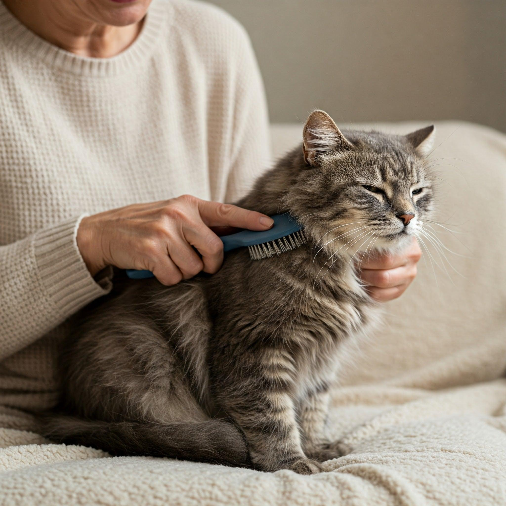
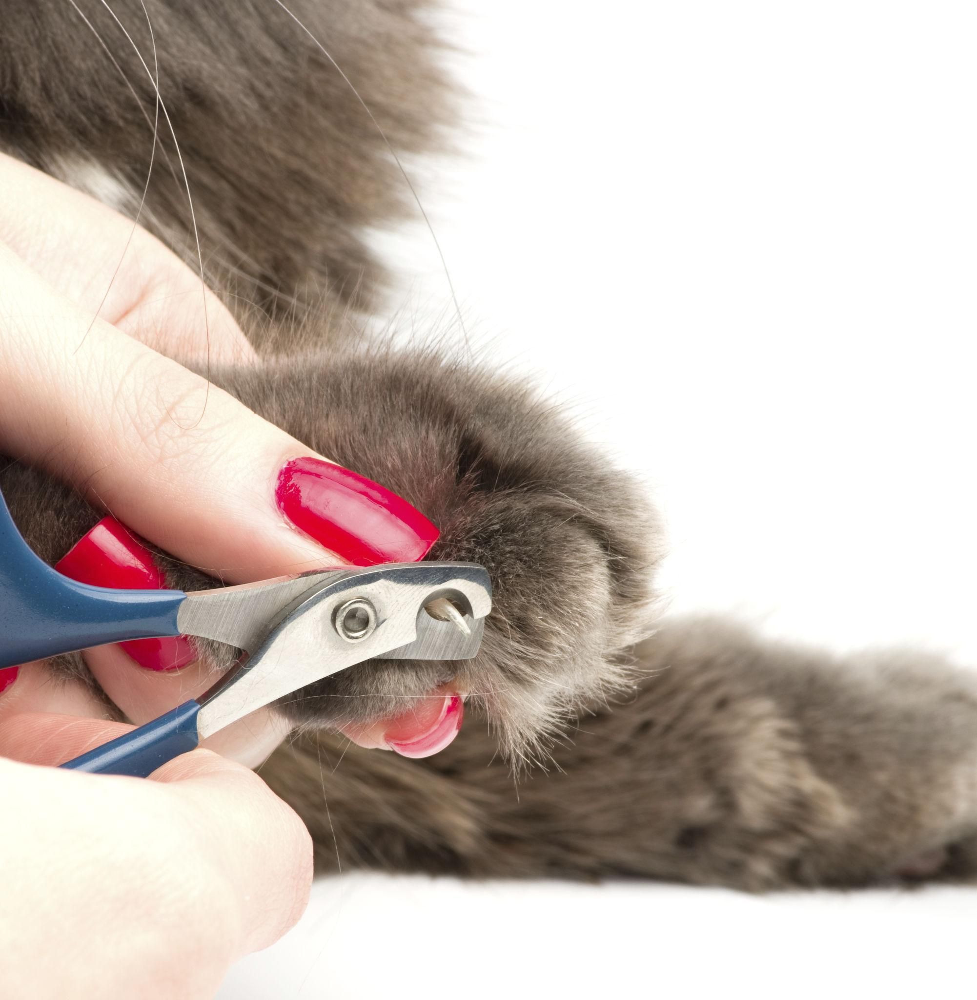
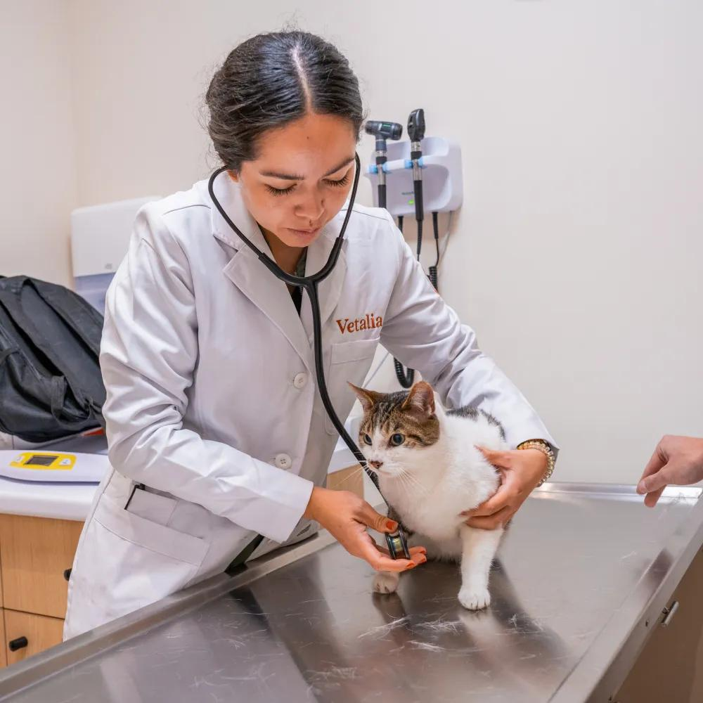

Kedilerin sağlıklı ve mutlu bir yaşam sürmesi için düzenli bakım gerekir. Mama ve su kapları temiz tutulmalı, tuvaletleri düzenli olarak temizlenmelidir. Tüyleri ihtiyaçlarına göre taranmalı ve veteriner kontrolleri aksatılmamalıdır. Ayrıca kedilerin oyun oynayabileceği, dinlenebileceği ve kendilerini güvende hissedebileceği bir ortam hazırlanmalıdır.